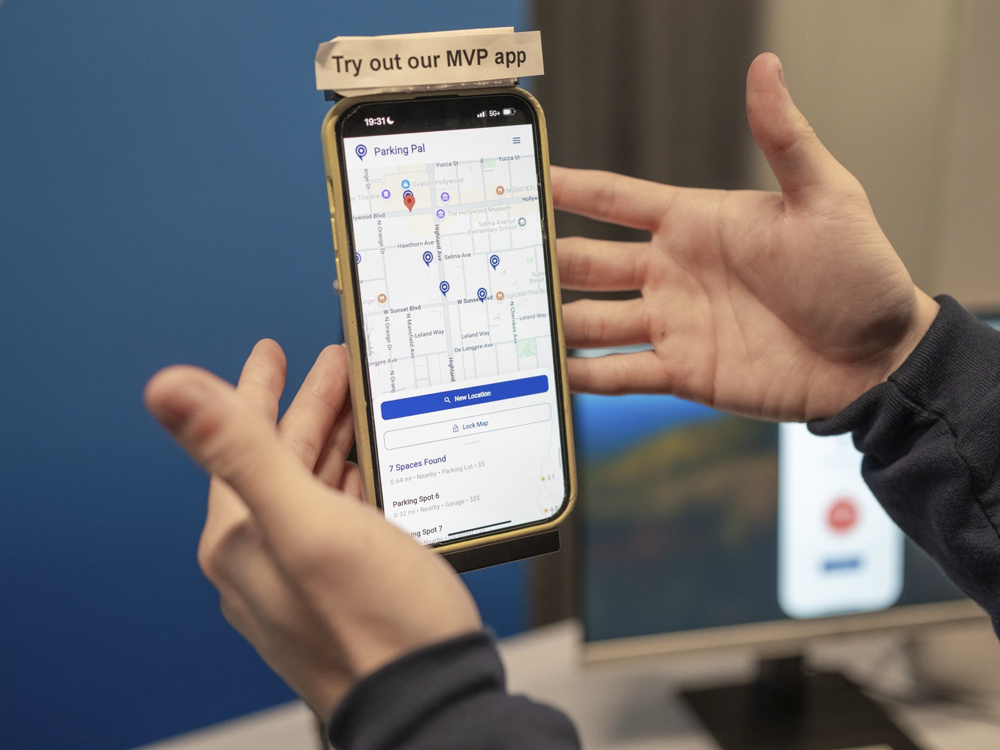

Product development engineer, student startup
Finding parking in Los Angeles is a daily struggle. In busy areas like Downtown or Santa Monica, I often spend 15-30 minutes circling for a spot, dealing with unclear signs, inconsistent meter rules, and the risk of receiving tickets or having my vehicle towed. Not only does it waste time and fuel, but it also contributes to traffic and pollution. Hence, I wanted to make something that can help other people with the same struggle
Researched and developed a proof of concept utilizing an microcontrollers, sensors with SolidWorks for mechanical design. Aimed to put real-time data collection from the sensor onto a mobile application using JavaScript, HTML/CSS, and C++, supported by a Node.js server for efficient communication between hardware and software.


Successfully developed a functional MVP of a sensor system for the Enterpreneurship Society Incubator Showcase. The prototype demonstrated real-time magnetic field detection with consistent accuracy and stability in controlled environments. Key outcomes included reliable signal acquisition, integration with a prototype, and initial data visualization capabilities. The MVP served as a proof of concept for scalable magnetic sensing applications, attracting interest from potential collaborators and stakeholders during the showcase.
Also we managed to impressed the whole room with the demo except for those 3 engineering students in the booth next to us

I would not go with a reed switch as my choice simply because of how small the range of detection is based on the empirical analysis. Solenoid magnetometer was also considered, but it was not cost-efficient, so I abolished the idea